Introducción
1.1. Contexto y motivación del proyecto
El crecimiento de viviendas con espacios reducidos exige mobiliario que combine funcionalidad y diseño. Frente a la mueblería tradicional, la fabricación mediante modelado CAD y ruteado CNC permite crear muebles multifuncionales con alta precisión y rapidez. Este proyecto consiste en el diseño y fabricación de un velador organizador en MDF de 12 mm, que ofrece soluciones de almacenamiento y un tocador integrado para optimizar ambientes pequeños.
1.2. Alcance y limitaciones del prototipo
El proyecto abarca desde el modelado CAD hasta el mecanizado CNC y ensamblaje de un prototipo funcional. Al tener fines académicos, se limita a la validación estructural y funcional de una sola unidad, excluyendo producción en serie, análisis de costos o recubrimientos finales de pintura.
Objetivos
2.1. Objetivo general
Diseñar y fabricar mediante ruteado CNC un velador multifuncional en MDF de 12 mm, garantizando precisión dimensional y un correcto ensamblaje.
2.2. Objetivos específicos
- Modelar el velador en software CAD y generar las trayectorias de mecanizado CNC bajo criterios de manufacturabilidad y ergonomía.
- Fabricar las piezas en MDF de 12 mm optimizando el material y realizar su acondicionamiento superficial (lijado).
- Ensamblar el prototipo utilizando uniones a presión y herrajes complementarios (bisagras y jaladera).
- Validar la estabilidad estructural, el correcto funcionamiento de los compartimientos y la calidad del acabado final.
Concepto de Diseño
3.1. Nombre y descripción del mueble
NÓRDIC 12
Velador Multifuncional — Mesa de Noche Minimalista
Nordic 12 es un velador multifuncional de diseño minimalista fabricado en MDF, creado para optimizar el espacio en dormitorios modernos. Funciona como mesa de noche, organizador y tocador.
3.2. Valor agregado
Está compuesto por los siguientes elementos:
Tapa superior con espejo plegable
Convierte el mueble en tocador e incluye un compartimiento interno para accesorios.
Cajón frontal
Espacio de almacenamiento cerrado que protege y organiza objetos personales.
Repisas abiertas
Compartimientos de rápido acceso para libros o elementos decorativos.
Sistema de ensamblaje
Combina uniones mecanizadas por ruteado CNC con herrajes para un montaje seguro y estético.
3.3. Público objetivo
El mueble está dirigido a estudiantes universitarios, jóvenes profesionales y personas que residen en espacios limitados, como habitaciones pequeñas o departamentos. Es la solución ideal para usuarios que valoran el diseño minimalista y necesitan optimizar su entorno mediante mobiliario altamente funcional.
3.4. Uso funcional
Diseñado para adaptarse a las necesidades diarias dentro del dormitorio, el Nórdic 12 centraliza múltiples usos:
- Mesa de noche: Sirve como superficie de apoyo principal para lámparas, relojes, celulares o elementos decorativos.
- Tocador personal: Su espejo plegable permite que el usuario se arregle cómodamente sin requerir un mueble extra.
- Organizador integral: Dispone de áreas específicas para resguardar objetos personales, así como repisas para libros y dispositivos electrónicos, manteniéndolos siempre ordenados y accesibles.
Fundamento Teórico
4.1. Fabricación aplicada al mobiliario
El uso conjunto de modelado tridimensional (CAD) y mecanizado automatizado permite fabricar piezas complejas con mayor exactitud, mejor acabado superficial y en menor tiempo en comparación con la manufactura tradicional.
Imagen 1 — Flujograma de proceso de fabricación
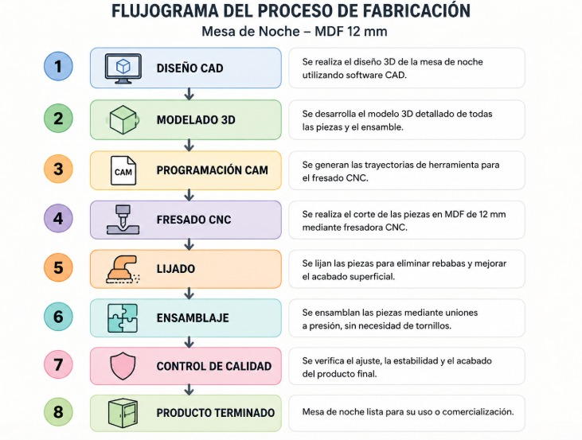
4.2. Tecnología utilizada: Ruteado CNC
El ruteado CNC (Control Numérico Computarizado) es un proceso de mecanizado automatizado en el cual una fresa rotativa, guiada por coordenadas generadas a partir del modelo CAD, corta el material siguiendo trayectorias programadas con precisión milimétrica. A diferencia de los métodos tradicionales de carpintería, esta tecnología permite obtener piezas planas con tolerancias controladas, encajes a presión exactos y un acabado uniforme, eliminando la variabilidad propia del corte manual.
Para la fabricación del Nórdic 12 se empleó una fresadora CNC tipo ShopBot del Fablab ESAN.
Imagen 2 — Proceso de Ruteado CNC en el Fablab ESAN
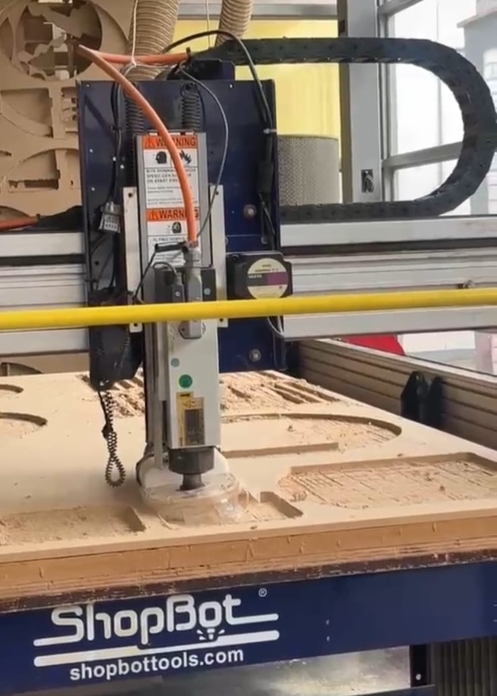
4.3. Material base: MDF (12 mm)
El MDF es un material compuesto de gran homogeneidad, ideal para manufactura automatizada porque no presenta nudos ni vetas naturales direccionales, evitando así astillamientos impredecibles durante el corte a altas revoluciones. Para el prototipo del velador se empleó un tablero MDF de 12 mm de espesor constante, el cual proporciona la rigidez y resistencia estructural necesaria para soportar cargas, permite un adecuado aprovechamiento de la materia prima en el nesting (distribución de corte) y ofrece una superficie sumamente lisa y óptima para el posterior lijado.
Diseño de Ingeniería
5.1. Dimensiones generales del mueble
El diseño final ensamblado cuenta con las siguientes dimensiones totales para asegurar su formato compacto:
5.2. Modelado en software CAD
El modelado completo se desarrolló en Autodesk Inventor 2026. Este software permitió modelar las uniones tipo caja y espiga con las tolerancias necesarias de ±0.5 mm en los encajes para asegurar que las piezas pudieran ensamblarse a presión sin fisurar el MDF de 12 mm, tal como se especifica en los planos de las piezas laterales y de elevación.
5.3. Planos técnicos de cada pieza
A continuación se presentan los planos donde se encuentran todas las piezas utilizadas para el mueble realizado.
Layout 1 — Plano de las piezas sección izquierda — Parte I
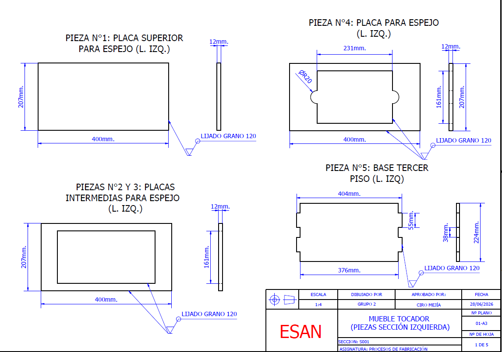
Layout 2 — Plano de las piezas sección izquierda — Parte II
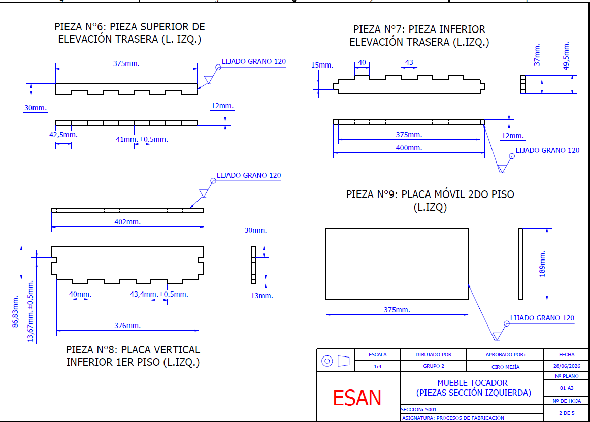
Layout 3 — Plano de las piezas sección izquierda — Parte III
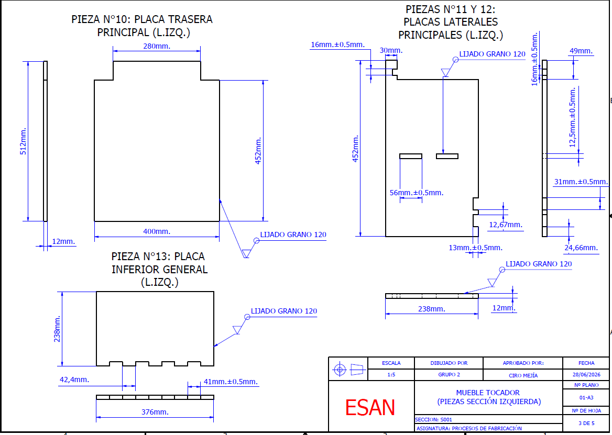
Layout 4 — Plano de las piezas sección derecha — Parte I
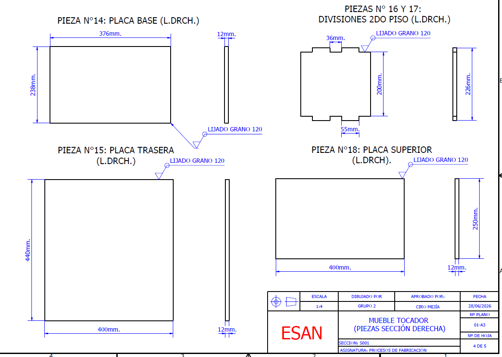
Layout 5 — Plano de las piezas sección derecha — Parte II
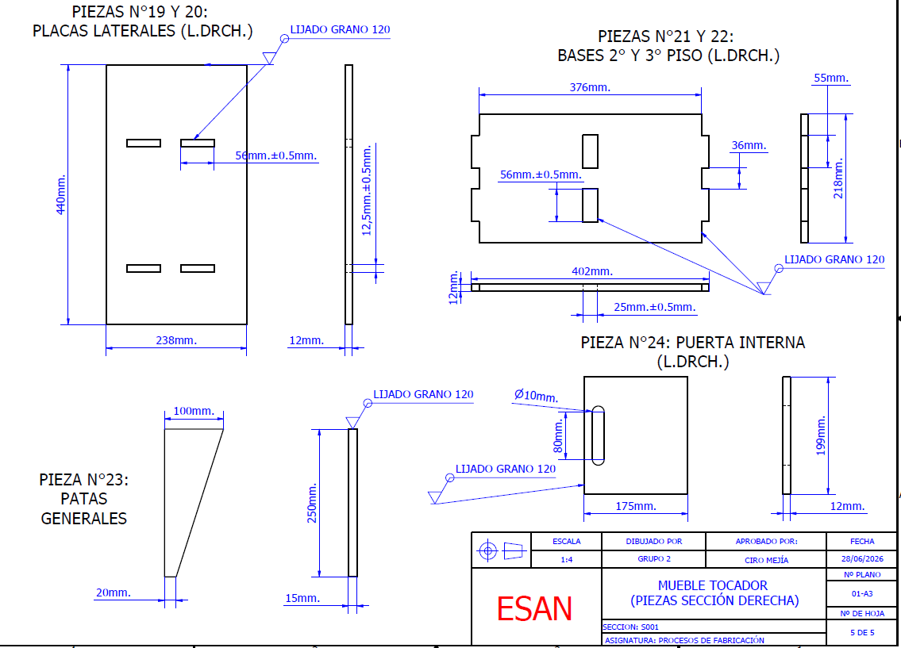
5.4. Plano de ensamblaje
El montaje se realiza construyendo dos módulos independientes que posteriormente se integran para alcanzar los 80 cm de ancho total:
- Módulo izquierdo (Tocador): Se arma la estructura base mediante juntas dentadas a presión mecanizadas por CNC y se instala la tapa superior abatible con bisagras.
- Módulo derecho (Cajonera): Se ensamblan las placas laterales, bases y divisiones internas para conformar los tres niveles de organización.
- Integración final: Se unen ambos módulos lateralmente y se concluye con la instalación de las cuatro patas estructurales y los herrajes complementarios (bisagras y jaladera frontal).
Layout 6 — Plano de ensamblaje
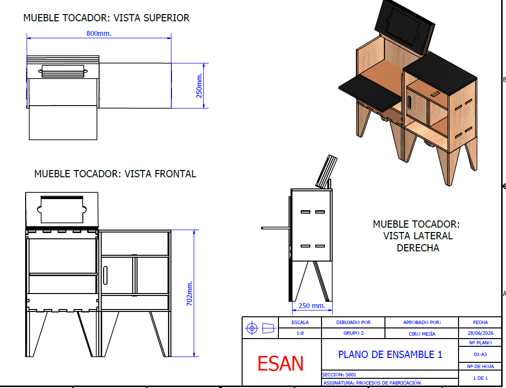
Layout 7 — Plano de conjunto
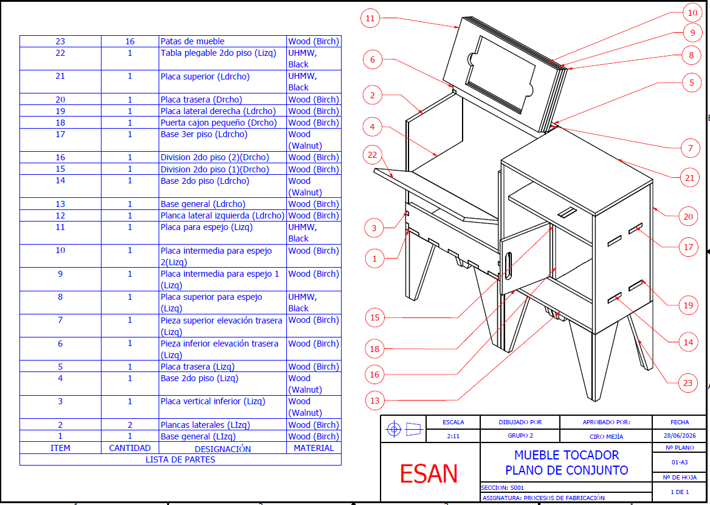
5.5. Sistema de uniones
El sistema de uniones del Nórdic 12 combina dos tipos de conexión que trabajan en conjunto para garantizar resistencia estructural, facilidad de armado y un acabado estéticamente limpio, sin tornillos visibles en las caras exteriores del mueble.
5.5.1. Uniones a presión mecanizadas
Todas las piezas estructurales planas del mueble (placas laterales, traseras, divisiones internas y bases) incorporan ranuras y dientes generados directamente durante el proceso de ruteado CNC. Estas geometrías están diseñadas con tolerancias controladas (±0.5 mm) para encajar entre sí a presión, lo que permite un ensamblaje firme sin necesidad de tornillería interna.
5.5.2. Herrajes complementarios
Las funciones móviles del mueble (tapa del espejo, puerta interna y cajón) requieren herrajes metálicos que se instalan al final del ensamblaje. Se utilizaron tres tipos:
- Bisagras metálicas tipo libro en la tapa abatible del compartimento del espejo, permitiendo que el usuario abra y cierre el tocador de forma segura.
- Bisagras metálicas adicionales en la puerta interna del módulo derecho, garantizando un giro controlado al abrir el compartimento.
- Jaladera metálica embutida en el cajón frontal del módulo izquierdo, que facilita la apertura y le da un toque estético contemporáneo al frente del mueble.
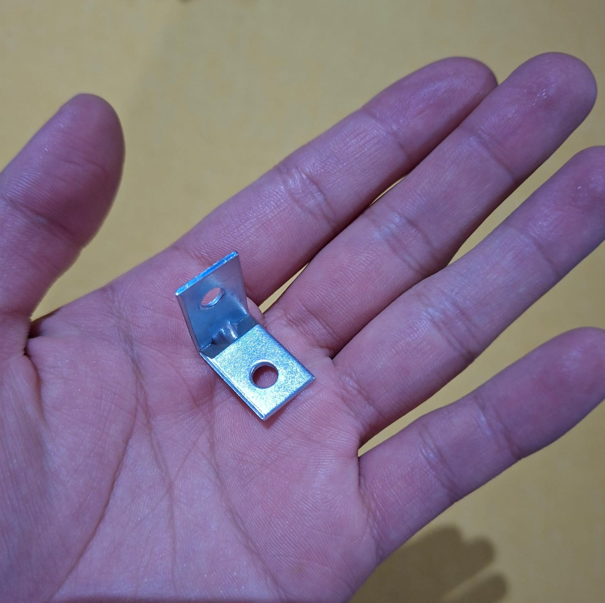
Imagen 3 — Ángulo de zinc liviano
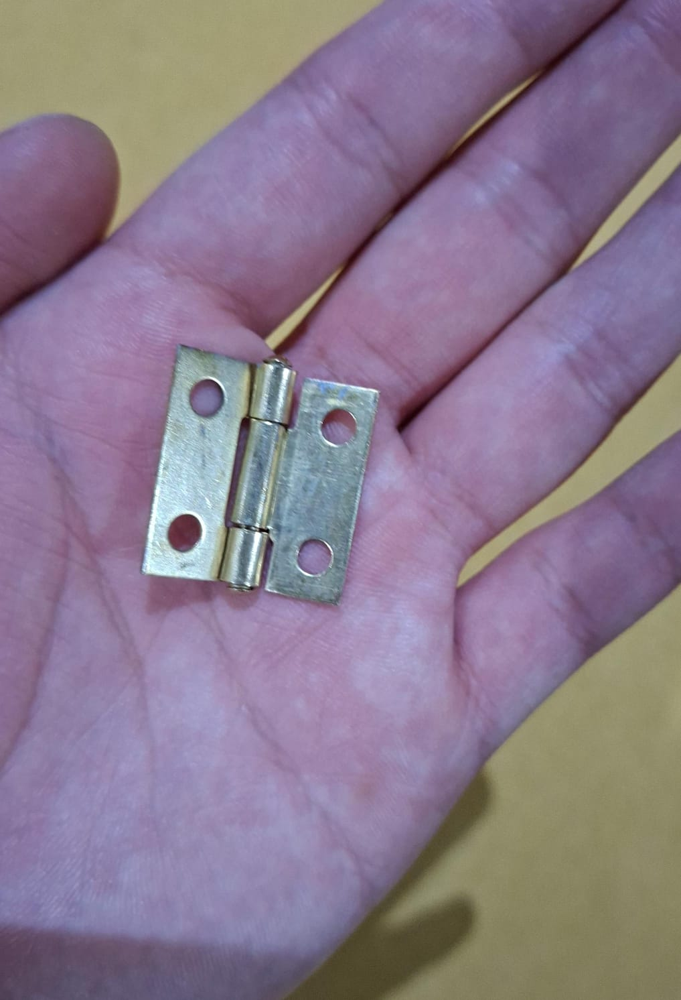
Imagen 4 — Bisagra rectangular tipo libro
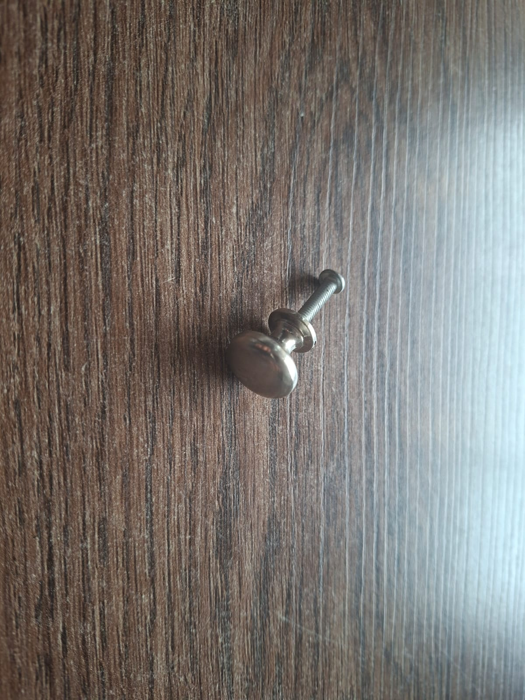
Imagen 5 — Perilla ovalada pequeña
Proceso de Fabricación
La fabricación del Nórdic 12 se desarrolló íntegramente en el Fablab de la Universidad ESAN, integrando el flujo digital con las operaciones manuales de acondicionamiento (lijado, ensamblaje e instalación de herrajes). A continuación se documenta el proceso completo, desde el corte de las piezas hasta el mueble terminado.
6.1. Corte
El corte se ejecutó en tres pasadas progresivas de 4 mm cada una, hasta completar el espesor total del tablero (12 mm), utilizando los parámetros descritos en el punto 4.2 del presente informe.
Imagen 6 — Corte de las piezas
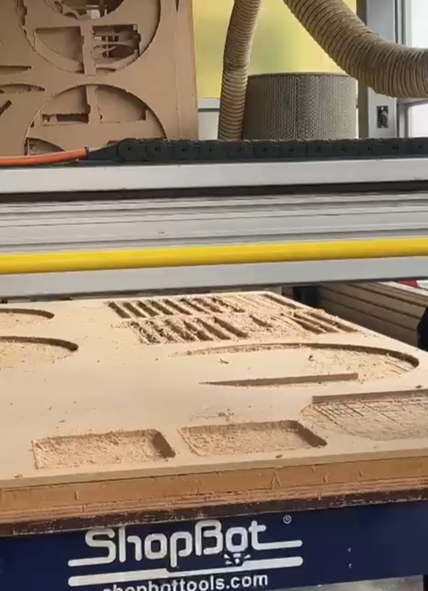
6.2. Desmontaje y desbarbado
Una vez finalizado el fresado, las piezas se separaron del tablero, se removieron las rebabas con una lima fina y se lijaron los bordes para preparar las superficies de contacto para el ensamble a presión.
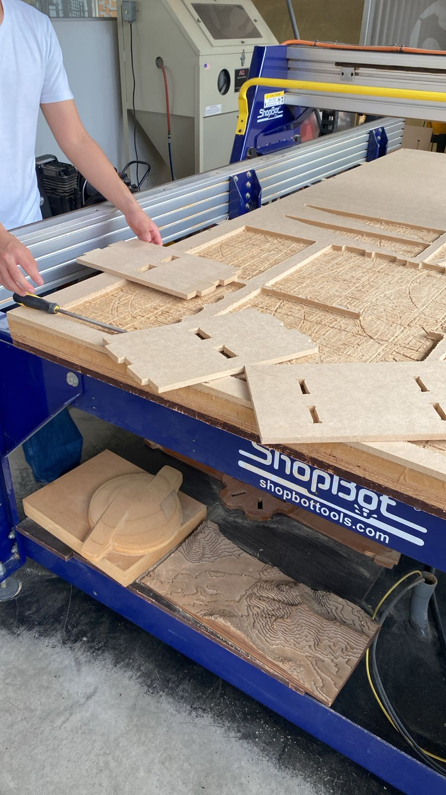
Imagen 7 — Desmontaje de las piezas
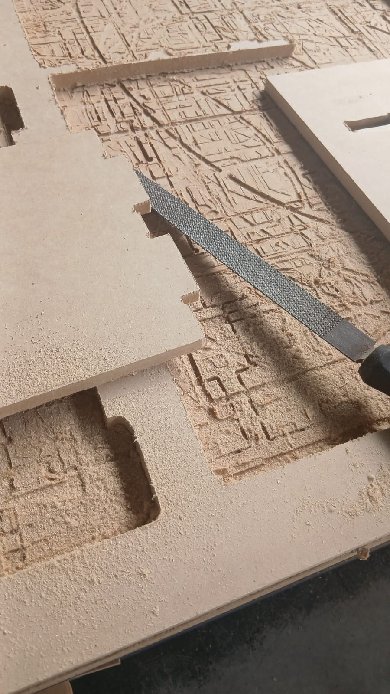
Imagen 8 — Lijado de las piezas
6.3. Proceso de ensamblaje
6.3.1. Armado de los módulos
El armado de la estructura consistió en la conformación paralela de sus dos secciones. Por un lado, el módulo izquierdo (tocador) se estructuró uniendo las placas laterales a la trasera mediante juntas a presión mecanizadas en CNC, integrando posteriormente las divisiones internas, la placa inferior general y las piezas de elevación trasera para cerrar el cuerpo. De manera simultánea, el módulo derecho (cajón organizador) se conformó ensamblando sus laterales con la placa base, trasera, superior, bases de niveles intermedios y divisiones internas.
Imagen 9 — Armado de los módulos
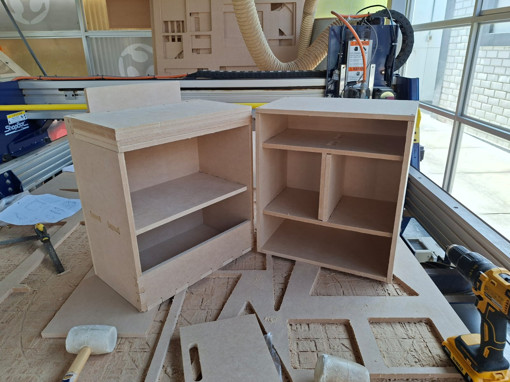
6.3.2. Armado del compartimento del espejo
Se ensamblaron las placas sobre el módulo izquierdo, formando la tapa abatible del tocador. Se montó el espejo plegable y se aseguró con las bisagras metálicas correspondientes.
Imagen 10 — Armado del compartimiento del espejo
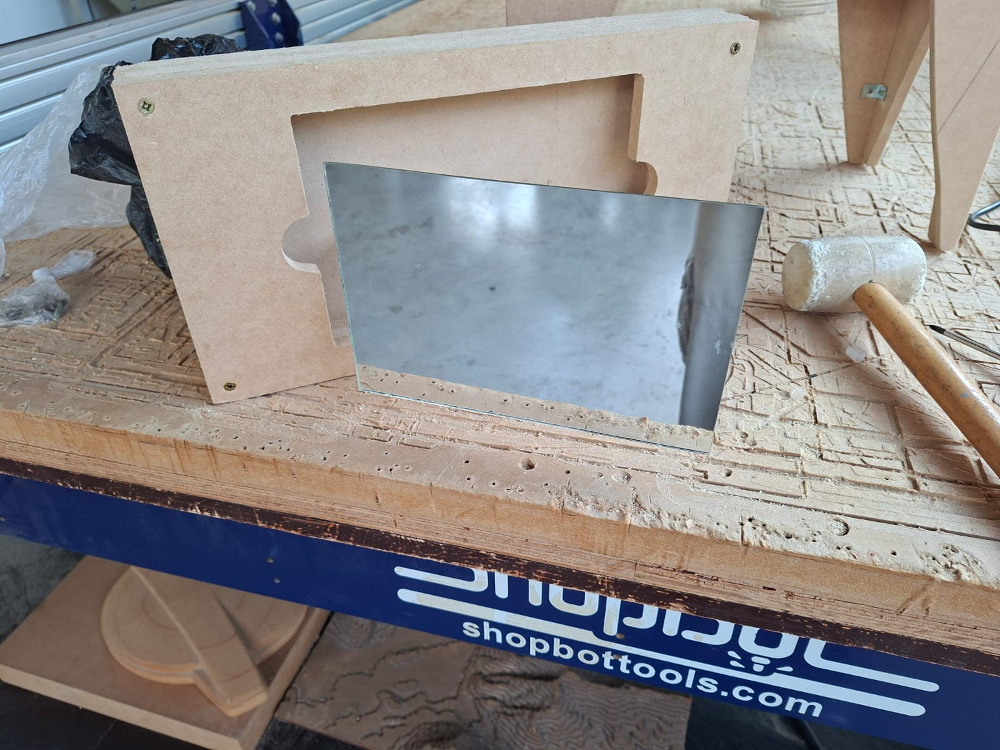
6.3.3. Instalación de las patas
Se atornillaron las cuatro patas estructurales en las bases de cada uno de los dos módulos.
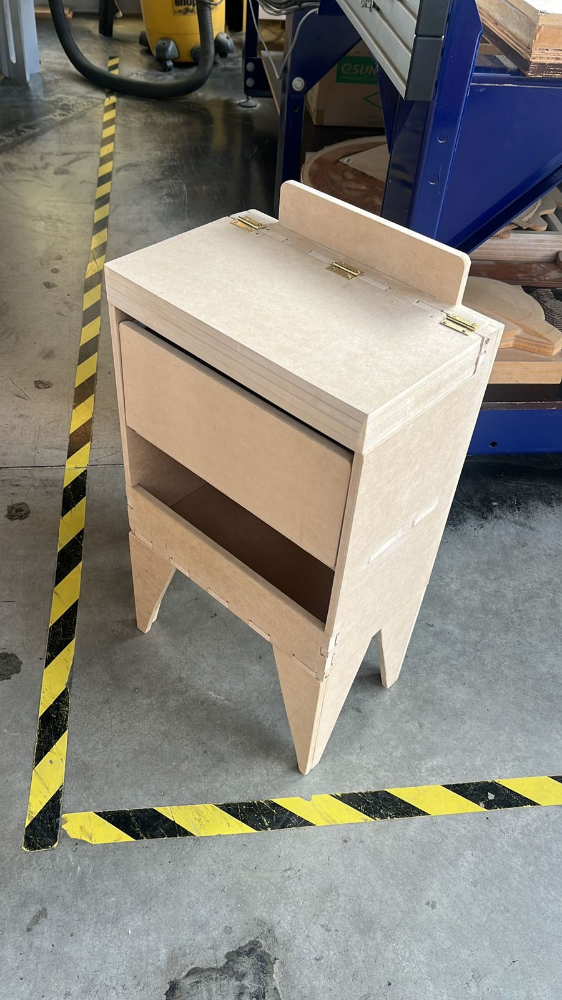
Imagen 11 — Instalación de las patas (I)
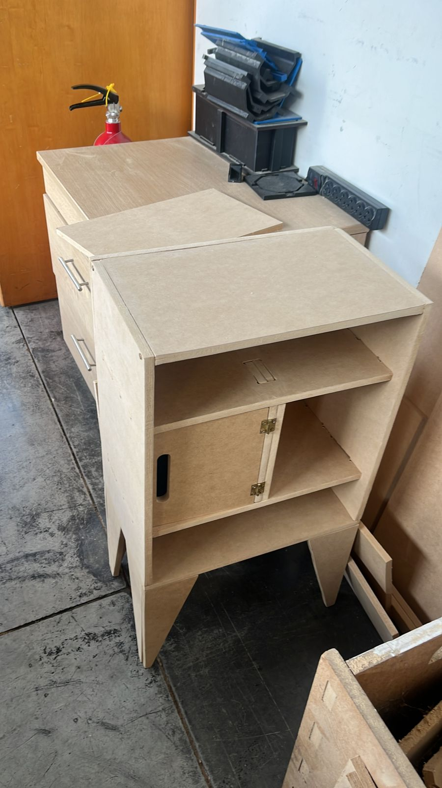
Imagen 12 — Instalación de las patas (II)
6.3.4. Unión de ambos módulos
Una vez armados los dos cuerpos por separado, se unieron lateralmente para formar el mueble completo de 80 cm de ancho, alineando las bases superiores e inferiores.
Imagen 13 — Unión de ambos módulos
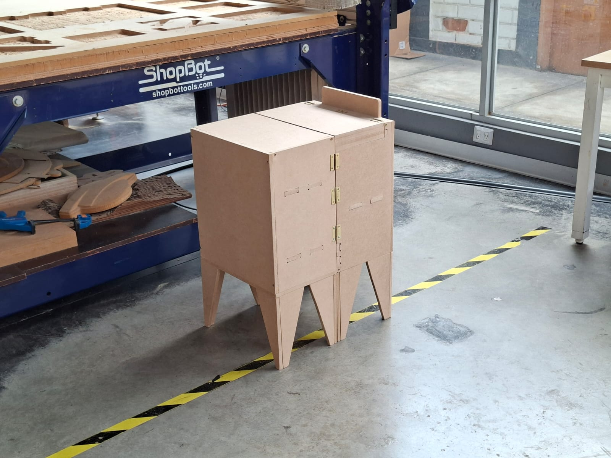
6.4. Mueble final ensamblado en 3D y real
El Nórdic 12 se concibió como un velador multifuncional de diseño minimalista fabricado íntegramente en MDF de 12 mm, orientado a optimizar el espacio en dormitorios modernos. El producto final integra en un solo cuerpo de 80 × 25 × 70.2 cm tres funcionalidades principales: mesa de noche con superficie de apoyo, tocador con espejo plegable y compartimento de almacenamiento, y organizador con cajón frontal, repisas abiertas y puerta interna. El uso del ruteado CNC permitió obtener un encaje milimétrico entre todas las piezas, mientras que los herrajes complementarios (bisagras y jaladera) aportan la movilidad necesaria a las partes abatibles.
Imagen 14 — Mueble final desplegado en 3D
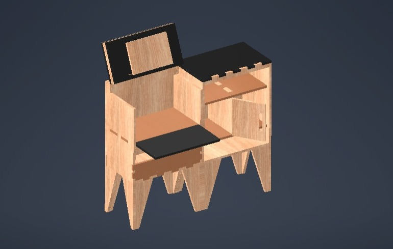
Imagen 15 — Mueble final ensamblado
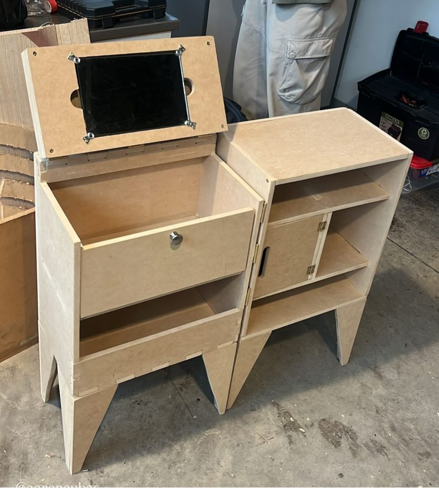
Recomendaciones
Optimización del material (Nesting)
Para futuras fabricaciones, se sugiere realizar un estudio más profundo en la distribución de las piezas (nesting) dentro del software CAM para reducir aún más el porcentaje de desperdicio del tablero de MDF.
Acabados y durabilidad
Aunque el prototipo actual valida la funcionalidad, se recomienda aplicar recubrimientos protectores (como sellador, pintura poliuretano o laminado) para proteger el MDF de 12 mm contra la humedad y el desgaste por el uso diario.
Escalabilidad y producción
Evaluar la tercerización (outsourcing) del servicio de ruteado CNC para reducir costos fijos de maquinaria, además de aplicar estrategias de simplificación de la cadena de suministro al negociar compras de MDF por volumen directamente con fabricantes.
Conclusiones
Precisión y viabilidad
El uso conjunto del modelado CAD y la tecnología de ruteado CNC demostró ser altamente efectivo, permitiendo fabricar el velador Nórdic 12 con gran exactitud dimensional y un excelente nivel de repetibilidad.
Eficiencia en el ensamblaje
El diseño de uniones mecanizadas a presión redujo la necesidad de herrajes complejos, facilitando un montaje rápido y garantizando la estabilidad estructural del mueble.
Cumplimiento del propósito
Se logró desarrollar con éxito un mobiliario multifuncional que integra almacenamiento, repisas y un tocador oculto, validando que el diseño paramétrico es una solución ideal y moderna para optimizar el espacio en dormitorios pequeños.